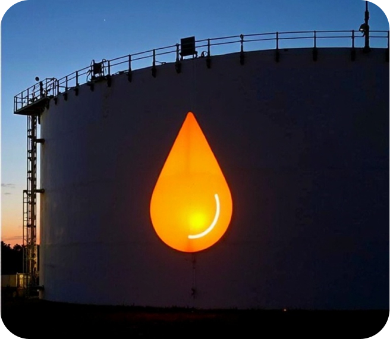
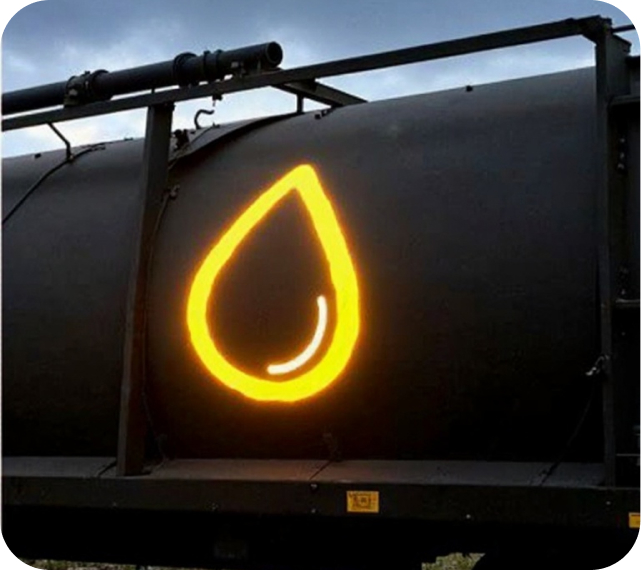
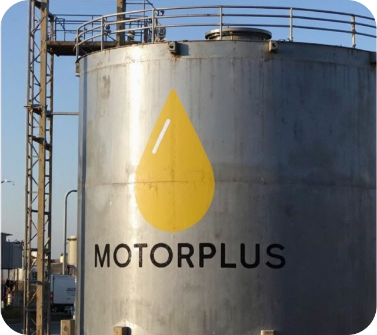
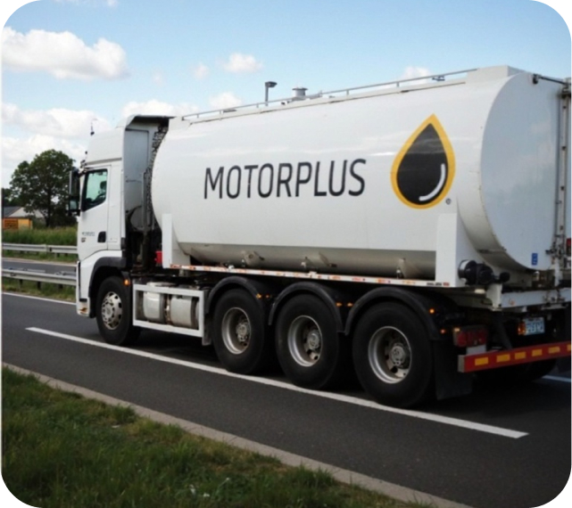
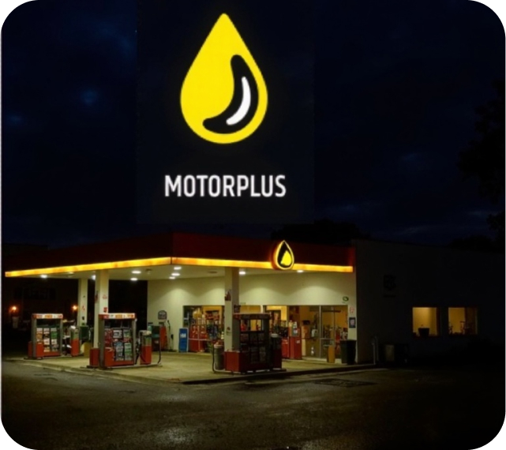
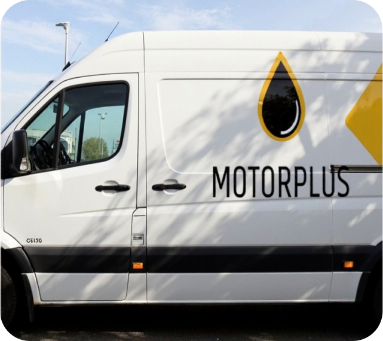

GUARANTEED QUALITY CONTROL
MotorPlus has established a risk-based fuel quality management system at all stages of production, transportation, and distribution to consumers. The system ensures confidence in high fuel quality from the factory tank to the vehicle's fuel tank.
MotorPlus produces motor fuel at its own refineries (13 in Russia), stores it at its own oil depots (113 oil depots), and distributes through its own sales network (approximately 3,000 gas stations).
STAGES OF QUALITY CONTROL
FINISHED PRODUCT CONTROL AT THE FACTORY
Fuel production is carried out at own refineries
Fuel quality is controlled for 18 operational and environmental characteristics at 13 stationary factory laboratories, with a declaration of compliance with Technical Regulation of the Customs Union 013/2011 and a quality certificate issued for each batch of fuel.

CONTROL DURING FINISHED PRODUCT SHIPMENT
Sealing of railway tank cars
Fuel is shipped from the factory via pipeline, rail, and road transport. Samples are taken from transport vehicles before shipment for quality control. Transport vehicles are sealed to ensure fuel safety during transit.

PETROLEUM PRODUCT RECEIVING CONTROL AT THE OIL DEPOT
Petroleum products are stored at own oil depots
When fuel arrives at the oil depot, samples are taken from transport vehicles before draining into storage tanks, and tests are conducted for key quality indicators. Compliance with standard requirements is verified.

PETROLEUM PRODUCT STORAGE CONTROL IN TANKS
Quality control is performed by own distribution laboratories
Fuel at the oil depot is stored in tanks. Quality control in tanks is performed after fuel is drained from transport vehicles. Based on the control results, a quality certificate is issued with a conclusion on fuel compliance with standard requirements and the Technical Regulation.

CONTROL DURING LOADING TO ROAD TRANSPORT
Fuel transportation is carried out by specialized modern road vehicles
The Company transports fuel to gas stations using its own tanker trucks (over 900 units) and subcontractor vehicles. All tanker compartments are sealed, and GPS monitoring of vehicle movement is implemented.

RECEIVING CONTROL AT THE GAS STATION
Fuel receiving control from road transport at the gas station
When fuel arrives at the gas station, a sample is taken from each section of the tanker truck for control purposes. Quality control is performed for key indicators. A quality certificate issued by the oil depot must be present.

ON-SITE GAS STATION CONTROL
Quality control by corporate mobile laboratories
Fuel quality at gas stations is controlled by 15 own mobile laboratories, whose express analyzers can determine fuel quality for key parameters within 20 minutes. Mobile laboratory staff perform approximately 14,000 various analyses per month.
